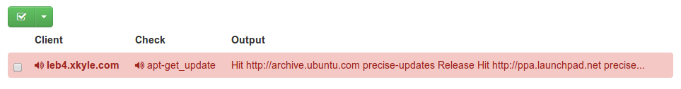

Introducing sensu-shell-helper!
The Problem
The barrier to writing Nagios checks is high. I dare say very high. You have to think about check intervals, host groups, service groups, config files, etc.
But, I know my servers are not behaving, if only there was a way to check them! They run commands for me all the time. In the worst case they fail and no one knows. The best case is that they end up in my cron spam folder….
A Solution!
Sensu-shell-helper. It is a small script I wrote to make it easier to monitor arbitrary commands with Sensu. Here is how you use it
sensu-shell-helper apt-get update
Yes. That is it. No mandatory config options. Good defaults. Minimal overhead. What does this check look like in the dashboard when it fails?

Exactly what I wanted. And of course, when apt-get update begins to work again, the check will resolve itself.
Under The Hood
sensu-shell-helper reall just takes in the output of the command you ask for, tail’s it, then sends the result to localhost:3030, which the sensu-client listens on.
By default it does not specify any handlers. (But they can be specified on the command line with -H) For the check-name it takes the full command and munges it to pass the sensu validator. Duplicate instances of the exact same command on a particular host will be seen as a single “check”.
Most commands do not return 0,1,2,3 according to the Sensu / Nagios plugin API, so the sensu-shell-helper will emit 2 (critical) in the event that the shell command returns anything non-zero. This behavior can be overridden with -N in the case that your command does conform to the 0,1,2,3 spec.